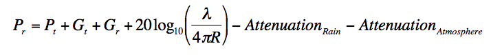

The Friis transmission equation is used in telecommunications engineering, and gives the power received by one antenna under idealized conditions given another antenna some distance away transmitting a known amount of power. The formula used to estimate the link budget is as follows
- Where, Pr is the power received by the reciever.
- Pt is the power transmitted by the transmitter.
- Gr and Gt are the gaines of the Receiver and the transmitter respectively. Since we have used the same antenna for the transmitter and the receiver, Gr = Gt = 51.4 dB.
- Atmospheric attenuation is estimated to around 2.6 dB.
- Rain Attenuation is calculated individually for all of the three locations.
Attenuation by gases for W/V bands is primarily caused by oxygen and water vapor. A method for predicting absorption due to atmospheric gases is given in [2]. Figure 1 shows the effect of oxygen and water vapor to wave propagation in different frequencies. The resonance of water absorption occurs at approximately 22 and 183 GHz, and absorption resonances for oxygen occurs at 60 and 120 GHz. Minimum attenuation occurs between these frequencies. To calculate the gaseous attenuation, the parameters are needed are elevation angle, operating frequency, altitude above sea level, and water vapor density, and the attenuation equation can be found in [2].
Cloud attenuation becomes increasingly important to consider for reliable satellite communications at frequencies above 10 GHz [1]. For clouds or fog consist of small droplets, less than 0.01 cm, the Rayleigh approximation is valid for frequencies below 200 GHz and it is possible to express the attenuation in terms of the total water content per unit volume [3]. The following equation can be used to obtain the attenuation due to clouds for a given probability:
where L is the total columnar content of liquid water (kg/m^2), Kl is the specific attenuation by water droplet (can be obtained in Fig. 2), and θ is the elevation angle.